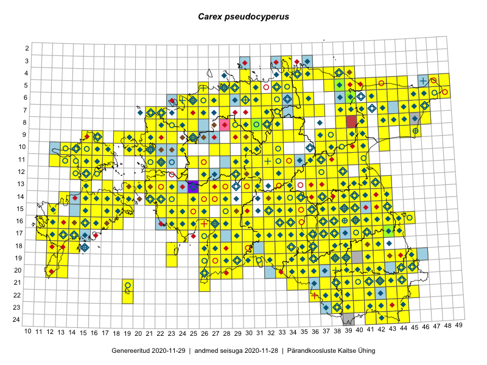

Carex pseudocyperus
Uuendatud: 2016-12-01
Kaardile koondatud taksonid: Carex pseudocyperus L.

Kaart põhineb 437 kirjel.
Kuvatud viited 20 esimesele andmebaasikirjele, ülejäänud PlutoFis
- Toomas Kukk, Eerik Leibak: 2015-08-09: 13-15: ala
- Thea Kull: 2015-07-07: 16-40: ala
- Malle Leht: 2015-08-02: : ala
- Toomas Kukk, Peedu Saar: 2014-09-24: 06-40: ala
- Tiit Hallikma, Toomas Kukk: 2015-07-21: 05-45: ala
- Ott Luuk, Toivo Sepp: 2015-07-29: 09-32: ala
- Ott Luuk, Toivo Sepp: 2015-07-29: 09-31: ala
- Peedu Saar, Ott Luuk: 2015-06-21: 14-42: ala
- Peedu Saar, Elle Roosaluste: 2015-07-12: 13-20: ala
- Peedu Saar: 2015-07-14: 15-38: ala
- Peedu Saar: 2015-07-15: 15-39: ala
- Ott Luuk, Peedu Saar: 2015-08-13: 24-44: ala
- Ott Luuk, Peedu Saar: 2015-08-13: 24-43: ala
- Tiit Hallikma, Toomas Kukk: 2015-07-22: 05-49: ala
- Peedu Saar, Eerik Leibak: 2015-07-30: 15-42: ala
- Peedu Saar, Liina Oja: 2015-06-10: 14-30: ala
- Ott Luuk, Peedu Saar: 2015-08-12: 23-43: ala
- Toomas Kukk, Eerik Leibak: 2015-08-11: 09-15: ala
- Toomas Kukk, Eerik Leibak: 2015-07-29: 16-45: ala
- Peedu Saar, Liina Oja: 2015-07-21: 06-44: ala